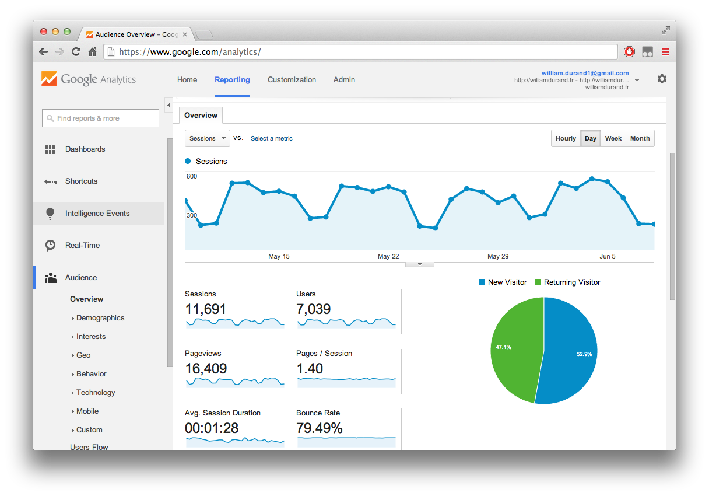
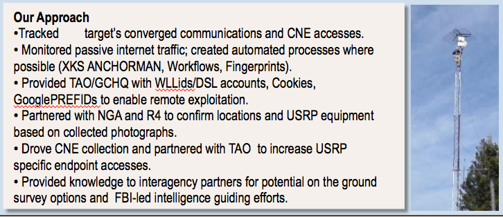

Web Analytics & Tracking 101
William Durand — May 30, 2016


A slide from an internal NSA presentation indicating that the agency uses at least one
Google cookie as a way to identify targets for exploitation. Thank you
Edward Snowden
!